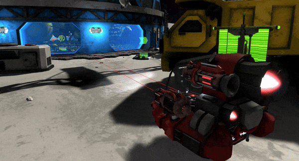
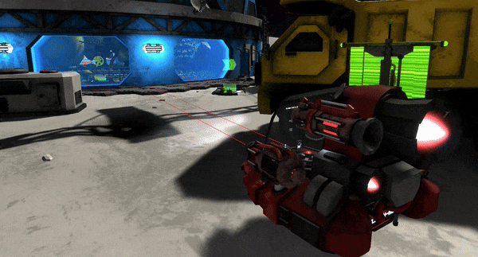

VR Battle Karts
During my internship at VR Base in Mechelen, I worked together with 2 other interns on a VR game using physical karts to drive around.
We started of by getting familiar with multiplayer programming, making a multiplayer mini prototype in Unity using fishnet. In this prototype we learned the basics while trying out all the aspects we would need in the main project (Syncing of data, scene switching, etc.)
We got quite a lot of freedom in the project, but the initial wants from the company were to make a multiplayer vr racing game using the physical karts provided. However, while brainstorming on how to make this work, we noticed some issues with this concept and decided to pivot to a battle kart game instead.
After the brainstorming we started with our first actual prototype, where our goal was managing to interface with the karts, make vr work and also have a way to emulate the game in the editor for easier testing & debugging. While the game is using multiplayer code, we didn't have to account much for de-syncing issues, and didn't have to factor in possible cheating/hacking etc... This is because while multiplayer, the game is still a local multiplayer game, where the players are in the same room, just on multiple machines.
Picture of the physical kart we used to drive around
Tracking issues...
For the tracking of the kart, we wanted to use the Vive Ultimate Trackers, a fairly new product at the time, but it seemed like the best option for tracking, as it would have its own independent tracking seperate from the headset. However, while i tried really hard to make it work, I faced a lot of issues using this device, starting with connection issues, version mismatches, etc... and when I eventually managed to make it work on my dev pc, with local space tracking, trying to make it work in the arena which uses Vive's LBE tracking system, broke everything again. Due to all these issues, we decided to leave this device behind for now, and instead use a controller to track the kart, but making sure that we have a way to switch to the trackers later on if we manage to get them working.
Production
Having a working prototype, we started production on the game, making sure to have a good workflow, and making sure that we could easily test the game in the editor. During production, I mainly worked on the VR & Kart tracking, interfacing with kart using mqtt, the input system, scene switching & also the main game mode implementation.
Polish
During the last phase of the project, we focused on polishing the game, making sure that all the features worked as intended & making the experience as smooth as possible. Because of time constraints for our artist (who was alone on this project) we filled in to make some VFX assets using Unity's VFX Graph. These assets included a rocket trail, bullet trail, some impact effects, etc. using the existing assets already made & modifying them to fit our needs.
Slideshow


 
